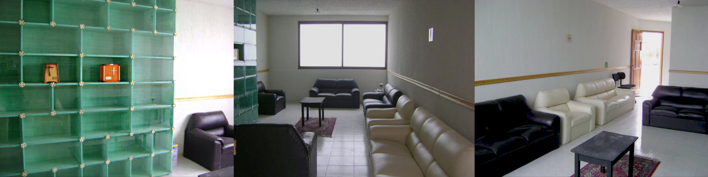
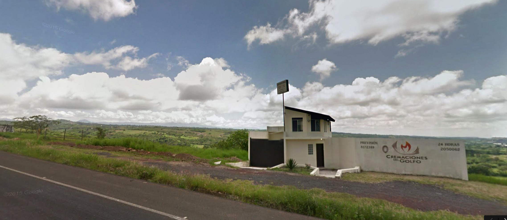

TRASPASO DE NEGOCIO
CONTACTO
edwin@hood.mx
553 707 5548
ANTECEDENTES
Impulsada por la Iglesia con la venta de nichos, la cremación en México registra un avance de 10% y hasta de 80% en el caso de la ciudad de México, donde los panteones no tienen lotes disponibles, para un universo de millones de habitantes.
En Xalapa, el panteón palo-verde se quedó sin lugares desde 2008 y las cremaciones han aumentado desde entonces. En el Distrito Federal, Nuevo León y Jalisco, la cremación tiene una demanda de 60%. En la ciudad de México, el crecimiento es de 80%, según información de Grupo Gayosso“. La demanda disminuye conforme se acerca a las rancherías, afirma Lozano, editor además de la revista especializada “El Guardián de los Muertos”.
El auge de la cremación en México se debe a factores: económico, de sobrepoblación en los panteones; cambio en la mentalidad de la sociedad y de tiempo de traslado para visitar a los difuntos.
A nivel mundial, la cremación también gana terreno. En Estados Unidos, la crisis económica orilla a la gente a gastar menos en los funerales. CNN publicó que el costo promedio de una inhumación es de 8,500 dólares, mientras que la cremación cuesta entre 3,000 y 5,000 dólares. Un informe de Pricewaterhousecooper, basado en datos de la Federación Internacional de la Cremación, muestra que en países protestantes como Suiza o Reino Unido la cremación tiene una demanda de 70% y de 99% en el caso de Japón; en España es de 25%.
PROPUESTA DE NEGOCIO
Adquirir un negocio ya funcionando con todo el futuro por delante: Cremaciones del golfo.
Ubicación
Cremaciones del golfo se encuentra ubicado en el Km 10 de la carretera Xalapa-Veracruz. A 5 minutos de plaza americas. Desde esa posición se tiene alcance a una población aproximada de 800mil personas.
Permisos y licencia
El crematorio cuenta con todas las licencias requeridas para operar: licencia de uso de suelo, licencia de salud, protección civil, licencia de funcionamiento ambiental, licencia de la procuraduría estatal de protección al medio ambiente. Cuenta con estudio de emisión de partículas, análisis de residuos, etcétera.
Además de las licencias el negocio cuenta con contratos para clientes aprobados por PROFECO, contratos con los proveedores y aviso de privacidad en conformidad con lo que establece el INAI.
Infraestructura y suministro
Cremaciones del golfo cuenta con un terreno de 600 metros cuadrados (20 de frente por 30 de fondo) a orilla de carretera en una zona de gran crecimiento. El terreno cuenta con todos los servicios. Cuenta con una construcción completamente funcional de 2 plantas, de 150 metros cuadrados, hecho específicamente para alojar un horno crematorio. El terreno tiene licencia de uso comercial.
El crematorio cuenta con un horno americano de marca American Incinerator Inc. Modelo classic del año 2010. Es un equipo de doble cámara 100% automatizado con controles touch. Todos los mantenimientos han sido efectuados por el fabricante, mismo que es el más grande proveedor de hornos crematorios nuevos en México, por lo que se puede tener la tranquilidad de que siempre va a existir soporte.
En materia de insumos todo es conseguido regionalmente. Por ejemplo el gas es proporcionado por la marca Sonigas, mismos que instalaron un tanque de 5000 litros y proveen un precio preferencial. La urnas son enviadas a domicilio sin costo desde una fábrica en la ciudad de México. Contamos con otro proveedor de urnas en la ciudad de Xico.
Los teléfonos de contacto son Telcel y Nextel para tener redundancia y estar disponibles 100%. El crematorio cuenta con cisterna, tanque de agua, luz y gas.
Personal y operación
El crematorio cuenta con 2 empleados. Un administrador/contador y un operador del horno (histopatólogo embalsamador con capacitación para operar el horno).
Dicho personal cuenta con años de experiencia. Conocen a los clientes, a los proveedores, saben resolver prácticamente todas las situaciones que se presentan. Dicho personal representa el know how de la operación.
POSICIONAMIENTO
El crematorio es ampliamente conocido por las funerarias asi como por una gran cantidad de usuarios finales. Cabe destacar que el cliente directo son las funerarias y el usuario final son los familiares del fallecido. Operando desde 2011 se ha hecho una referencia en la zona. Cuenta con una imagen desarrollada profesionalmente, sitio web, correo electrónico profesional, anuncio en sección amarilla, teléfonos acreditados por años y se ha presentado personalmente a las más de 20 funerarias de la región de xalapa, coatepec, xico, emiliano zapata y otros municipios cercanos.
- http://cremacionesdelgolfo.com.mx
- Sección Amarilla
- Conocimiento de los clientes. Directorio de Funerarias, Registros civiles…
COMPETENCIA
En Xalapa y área conurbada existen al menos 4 hornos crematorios. El de la funeraria Bosques del recuerdo (orientado a la clase alta), el crematorio municipal (orientado a la base de la pirámide y que opera muchas veces con subsidio del DIF), el crematorio del tepeyac que se encuentra en el área de Jilotepec y finalmente Cremaciones del Golfo. Este último cuenta con instalaciones modernas, estacionamiento y puede atender al sector medio, medio alto e incluso alto de la región, quienes de hecho resultan ser el mercado más común en las cremaciones. Pues la mayoría de quienes eligen cremación pertenecen a la clase media, son personas de estudios y amplio criterio.
UTILIDAD ACTUAL
Después de gastos el crematorio deja una utilidad de entre 15 y 20mil pesos mensuales con los clientes, ingresos y gastos actuales. Para más detalle consultar el anexo financiero.
Ingresos
- Servicio de cremación
- Venta de urnas
- Venta de agua, galletas, dulces, etc.
Costos actuales
- Gas, luz, agua, teléfonos
- Hospedaje y dominio web
- Anuncio en sección amarilla
- Sueldos
- Costo de urnas
- Impuestos
PENDIENTES Y FUTURAS MEJORAS
Las siguientes mejoras no detienen en absoluto la operación e ingresos del crematorio
- Está pendiente la instalación definitiva de la luz. Se encuentra en proceso. Ya se pago por los postes y está pendiente el cableado, transformadores, etcétera.
- Está pendiente la construcción de una fosa séptica.
- Se puede invertir en acondicionar la planta alta. Falta revocar y pintar una pared asi como colocar una puerta.
- A futuro se puede poner un lavador de gases para reducir a cero las emisiones de gas.
- A futuro el crematorio puede extenderse. Se cuentan con planos para instalar un segundo horno, poner salas de velación, o extender el estacionamiento.
INGRESOS POTENCIALES
Hay dos vías para incrementar las utilidades
- Reducción de costos
- Se puede renegociar el contrato de consumo de gas. La reforma energética predice mejores tarifas en gas para 2016
- Se puede adquirir nuevas urnas para explotar esas oportunidades de ingreso.
- Incrementar ingresos
- Revisitar a todas las funerarias. Clientes actuales y no clientes. Esto debería hacerse de manera constante pero no se hace porque el dueño del negocio no está presente. Hacer alianzas, ofrecer promociones
- Se pueden buscar alianzas con empresas o sindicatos para ofrecer descuentos corporativos a sus empleados en el uso de servicios funerarios
- Se puede buscar alianzas con aseguradoras para que utilicen los servicios de cremaciones del golfo
- Hay que visitar y dejar teléfonos de Cremaciones del Golfo en todos los hospitales, nichos, panteones, morgues, iglesias, florerías, tanatólogos y registros civiles de todos los municipios cercanos
- Hay que retomar las redes sociales, generar contenido. Incluso hacer una pequeña campaña por internet con google adwords utilizando keywords, hacer un análisis seo del sitio y optimizar para búsquedas orgánicas.
- Hacer publicidad. Radio, periódico, medios electrónicos, etc.
- Se puede considerar las ventas de servicios de previsión.
- Se puede considerar ofrecer un servicio funerario completo.
RAZONES PARA LA VENTA
Cremaciones del golfo fue fundado por José Luis Cházaro (violinista de profesión) y Edwin Cházaro (científico de datos de profesion). En 2012 José Luis muere víctima de cáncer de hígado y su hijo, Edwin, toma control del crematorio trasladándose del DF a la ciudad de Xalapa.
Edwin Cházaro cuenta adicionalmente con un negocio de tecnologías de informacion richit.com.mx que debido a un gran proyecto requiere su presencia física en la ciudad de México, viéndose obligado a regresar y operar de Manera remota con el mínimo tiempo. Así es como los esfuerzos de promoción y ventas en Cremaciones del Golfo disminuyen al mínimo.
En 2015 viaja a Kenia a la cumbre global de emprendimiento. Es en ese lugar donde conoce a mentores de la sociedad de científicos más grande del mundo, quienes aconsejan enfocarse en su pasión que es la ciencia y solicitan enfoque 100% en el negocio de tecnología. Aunque el negocio de cremación deja ingresos constantes, Edwin no tiene el suficiente tiempo para atender y crecer el negocio de la cremación como sería posible si se dedicara al 100%.
INVERSIÓN REQUERIDA
El precio de venta del negocio es de 3.5 Millones de pesos incluyendo:
- Un negocio probado (la cremación) que actualmente deja utilidad libre y que podría dejar mucha más si se le dedica el tiempo para atenderlo. Un negocio que va a crecer muchísimo en los próximos años.
- Permisos y licencias de operación.
- Contacto acreditado. Tanto teléfonos, anuncio en sección amarilla y sitio en internet.
- Inmueble terminado de 150 metros cuadrados en terreno de 600 metros cuadrados. Todos los servicios funcionales.
- Horno crematorio 100% funcional y con todos los mantenimientos directos del fabricante.
- Accesorios del horno. Trituradora, grúa y rastrillos.
- Urnas, ataudes, muebles para recepcion, sillas.
- Contratos para usuarios aprobado por Profeco, términos y condiciones, aviso de privacidad.
- Imagen, página de internet con hospedaje y correo electrónico empresarial.
- Know how. Personal de confianza que puede permanecer o apoyar en un periodo de transición para comunicar los procesos y la operación del dia a dia.
- Know how. Red de clientes, proveedores y contactos.
- Know how. Ideas y estrategias para incrementar la utilidad y crecer el negocio.

CONDICIONES DE VENTA
- Se requiere de oferta formal por escrito.
- Hasta 2 Millones pueden provenir de un crédito bancario para comprar el inmueble
- Se requiere de la firma de un contrato de compra-venta en el que se especifiquen los detalles y condiciones de la transacción.
- Pago de contado por transferencia electrónica.
- Se puede otorgar factura pagando e IVA correspondiente.
- Se otorga 9 meses para hacer el cambio de licencias a nombre de la nueva razón social.
CONTACTO
edwin@hood.mx
553 707 5548